검은 나폴레옹 vs. 하얀 나폴레옹 - 생 도밍그 (Saint Domingue) 원정 (상편)
게시: 2017-10-13T13:05:25+09:00
1492년, 콜럼버스는 서쪽 바다의 끝에서 (사실은 카리브 해였는데) 큰 섬을 하나 발견합니다. 그는 이 섬에 스페인어로 La Isla Espanola (라 이슬라 에스파뇰라)라는, 즉 스페인 섬이라는 멋대가리 없는 이름을 붙입니다. 그러다 다른 사람들이 좀더 멋나게 Hispaniola 라고 고쳐불렀지요. 이 섬에는 원래 타이노 (Taino)라는 남미 인디오 계통의 부족이 살고 있었으나, 이들은 원래 수자가 적었는데다 스페인 사람들의 공격과 박해, 그리고 그들이 가져온 천연두 등의 전염병에 곧 전멸에 가까운 타격을 입고 역사의 뒤안 길로 사라집니다. 이 섬에는 자연스럽게 스페인 사람들이 정착하게 되는데, 이들은 라틴 아메리카 지역 최초의 유럽식 도시라고 할 수 있는 산토 도밍고 (Santo Domingo)가 있는 섬 동반부에 주로 자리를 잡았습니다.
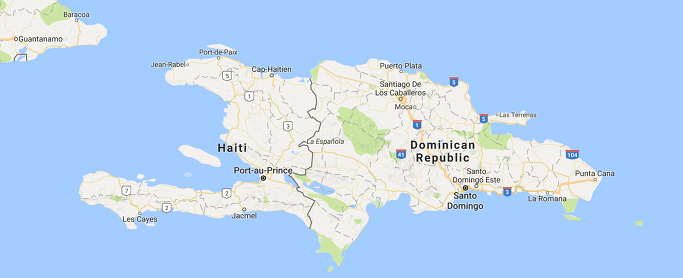
(지금도 히스파니올라 섬의 서쪽에는 아이티가, 동쪽에는 도미니카 공화국이 자리잡고 있습니다. 이 두 나라는 여전히 사이가 좋지 않습니다. 그 이유는 이 블로그를 다음편까지 끝까지 다 읽고나시면 아시게 됩니다.)
17세기가 되자, 프랑스인들 (정확히 말하자면 해적에 가까운 종자들)이 카리브 해에 둥지를 틀기 시작했습니다. 이들은 감히 스페인 제국의 식민지인 히스파니올라 섬에는 발을 붙이지 못하고, 그 서북쪽의 작은 섬 토르투가(Tortuga)를 근거지로 삼았지요. 이들은 출신 성분답게 평화로운 농부나 무역업자 생활보다는 히스파니올라 섬을 오가는 스페인 선박들에 대한 해적질을 주업으로 삼았습니다. 이들은 평상시 사냥한 짐승 고기를 훈제하여 비축 식량으로 삼았기에, 훈제한다는 타이노 족의 언어(Arawak어) buccan에서 유래된 boucanier라는 이름으로 불렸습니다. 영어로는 이들을 buccaneer (버캐니어)라고 불렀지요. 그냥 카리브 해의 해적이라는 뜻입니다.
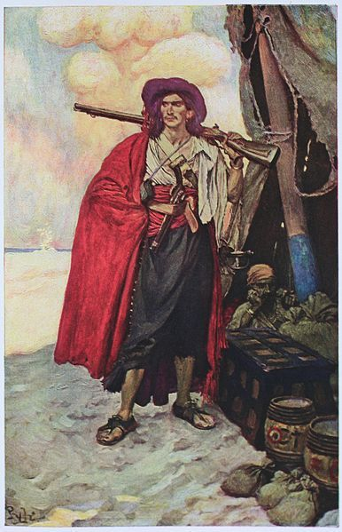
(그러니까 버캐니어라고 하면 일단은 프랑스 계통의 해적인 셈입니다.)
스페인 해군은 이들을 축출하려고 무진장 애를 썼으나 그 결과는 아시다시피 신통치 않았습니다. 이들의 세력은 오히려 점차 커져, 급기야 히스파니올라섬의 서반부, 그러니까 스페인 사람들이 별로 정착하지 않았던 지역으로 넓어졌고, 1641년에는 아예 최초의 프랑스 주지사가 이곳에 파견될 정도가 되었습니다. 1664년에는 루이 14세의 재상인 콜베르(Colbert)는 이 지역을 프랑스 서인도 회사의 공식 관할 지역으로 선포하기에 이릅니다. 그러다 9년 전쟁의 결과인 라이스빅 (Ryswick) 조약에서 마침내 스페인도 히스파니올라 섬의 서쪽 1/3에 대한 프랑스의 지배를 공식적으로 인정했습니다. 그러니까 히스파니올라 섬의 동쪽 2/3는 산토 도밍고 (Santo Domingo), 서쪽 1/3은 생 도밍그 (Saint Domingue)라는 "같은 이름 두 언어"로 불리게 된 것이지요.
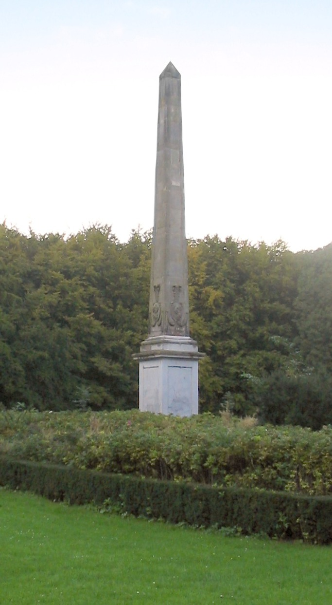
(네덜란드의 소도시인 라이스빅 (Ryswick, Rijswijk)에 세워져 있는 '라이스빅의 바늘'입니다. 바로 라이스빅 조약을 기념하여 만들어진 것입니다.)
아무래도 프랑스 태양왕 루이 14세가 직접 다스리는 땅이 된 만큼, 이후로는 해적질은 점차 잦아들고 프랑스도 플랜테이션 농장을 이곳에 세우게 되었습니다. 처음에는 담배, 인디고, 코코아 등을 재배했으나, 곧 주요 재배 작물이 커피, 목화, 그리고 무엇보다 사탕수수로 바뀌면서 생 도밍그의 번영이 시작됩니다. 전에 설탕과 카리브해 편에서 설명했듯이, 당시 설탕은 하얀 황금이었거든요. 황금이야 캐다보면 언젠가는 폐광이 되기 마련이지만, 이 하얀 황금은 생 도밍그의 태양과 풍토 덕분에 글자 그대로 밭에서 열리는 황금이었으니 이 설탕 플랜테이션이 가져다주는 부는 대단한 것이었습니다. 18세기 말이 되면 이 생 도밍그에서 생산되는 설탕이 유럽에서 소비되는 전체 양의 40%에 달했고, 또 커피 생산량도 유럽 소비량의 60%에 달했습니다. 그야말로 영국에게는 인도가 있고, 프랑스에게는 생 도밍그가 있다고 할 정도였지요.
(사탕수수입니다. 글자 그대로 슈가 슈가 ...)
문제는 사탕수수 재배에 안성마춤이었던 이 곳의 기후가, 사람에게는, 특히 유럽인들에게는 별로 쾌적한 편이 못되어, 유럽의 농부가 콧노래를 흥얼거리며 농사일을 할 수 있는 사정이 안되었다는 점이었습니다. 무엇보다 유럽인들을 공포에 떨게 한 것은 바로 이 지역의 풍토병인 황열병이었습니다. 모기에 의해 전염되는 바이러스성 열병인 황열병 (Yellow Fever)은 당시 예방책도 치료법도 없는, 치사율이 사람에 따라 15~50% 정도에 이르는 무서운 병이었지요. 덕분에 생 도밍그에 정착하는 유럽인들의 수는 그다지 많지 않았습니다. 여기서 한 몫 크게 번 농장주들은 되도록 서둘러 프랑스 본토로 돌아가곤 했지요. 무더운 기후도 기후지만, 무엇보다 황열병이 무서웠기 때문이었습니다.
그러다보니 자연스럽게 아프리카에서 노예를 수입해다 사탕수수를 재배하는 형태의 노동이 정착되게 되었습니다. 18세기에 아프리카에서 생-도밍그로 끌려온 흑인 노예의 수자만도 연인원 총 80만명에 달한다고 하니까 정말 대단한 규모였지요. 이렇게 많은 인원의 아프리카 흑인 노예들이 별로 크지도 않은 섬으로 끌려오다보니 인류학적으로 다소 희한한 일이 벌어졌습니다. 생각해보십시요. 백인들 눈에야 다같은 '흑인 노예'에 불과하겠지만, 사실 넓은 아프리카 서해안 곳곳에서 끌려온 흑인들은 서로 언어가 다른 경우가 많았습니다. 그러다보니 백인 농장주들과는 물론이고, 동료 노예들과도 의사 소통이 제대로 일어날 수가 없었지요. 그러다보니 새로운 언어가 탄생하기에 이릅니다. 크레올 (Creole) 어라고 하는, 프랑스어도 아니고 그렇다고 서부 아프리카어도 아닌 혼합 언어가 생겨난 것이지요. 아프리카에서 이제 막 끌려온 신규 노예들은 낯설고 험악한 환경에 적응하면서, 이 새로운 언어에도 익숙해져야 했습니다. 사실 익숙해진다기보다는 이 새로운 언어의 생성 및 발전에 몸으로 참여하고 있었던 셈입니다. 이 크레올 어는 흑인 노예들 사이에서 뿐만 아니라, 이들과 그래도 의사소통이 필요했던 농장 감독들이나 뮬래토(mulatto)들도 따라 배우는 지경에 이르렀습니다. (지금도 아이티 공화국의 공식 언어는 2가지인데 하나는 프랑스어고 다른 하나가 바로 이 크레올 어라고 합니다.)
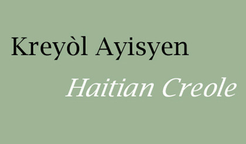
(두 단어 모두 아이티 크레올어라는 뜻입니다. 저거 Haitian을 영어로는 헤이시안으로 읽지만 프랑스어로는 아이시앙 haïtien 으로 읽으셔야 합니다. 불어에는 H 발음이 거의 없어요.)
또 생 도밍그의 사회 계층은 그냥 딱 백인과 흑인으로 나뉘는 것도 아니었습니다. 일단 필연적으로 혼혈인들, 그러니까 뮬래토(mulatto)들이 생겨날 수 밖에 없었지요. 미국의 백인 농장주는 이렇게 생긴 혼혈 아이를 그냥 노예로 부려 먹었다고 하지요. (따지고 보면 자기 아들 딸인데 말입니다 !) 그러나 프랑스인들은 대개 이렇게 생긴 혼혈 아이들을 자유인으로서 적절한 교육을 시켰고, 이들은 생 도밍그 현지 군대에 들어가기도 하고, 또 재산을 모아 작은 농장을 경영하기도 하는 등 자신들만의 사회 계층을 따로 구성했습니다. 그러니까 뮬래토 농장주가 아프리카에서 막 끌려온 흑인 노예들에게 잔인하게 채찍질을 하는 것이 뭐 그렇게 이상한 일이 아니었던 것이지요. 게다가 흑인 노예들 자신도 하나의 계급이 아니었습니다. 흑인 노예도 이제 막 아프리카에서 끌려온 1세대 노예가 있었고, 또 생 도밍그에서 태어난 2세대 노예가 있었습니다. 이들끼리도 서로 사이가 좋다고만은 할 수 없었습니다. 아무래도 생 도밍그에서 태어나 좀더 '순화된' 노예들은 좀더 덜 힘든 일을 맡는 경우가 많았거든요. 또 순수 흑인들 중에도 어렵게 자유를 얻은 자유민도 있었고, 또 산악지대로 도망쳐 산적질로 연명하는 무리들도 있었습니다. 이렇게 산적화된 도망 노예들은 당장 먹고 사는 것이 급했으므로 주로 허술한 흑인 노예들의 숙소를 털었고, 그 과정에서 흑인들끼리 죽고 죽이는 일도 잦았습니다. 특징적인 것은, 전체 인구 구성에서 아프리카에서 끌려오는 1세대 노예들의 비중이 상당히 높다는 것이었습니다. 이는 아무래도 생 도밍그의 사탕수수밭 노예 생활이 그리 목가적인 생활 환경이 안되다 보니, 많은 흑인 노예들이 도중에 죽어버리는 경우가 많았던데다, 노동 특성상 여자 노예의 수자가 크게 적었기 때문에 생 도밍그에서 태어나는 2세대 노예들의 수가 그리 많지 않았다는 것도 원인이었습니다. 그러다보니 생 도밍그는 저 멀리 대서양 너무 아프리카 서부 해안에서 흑인들을 마치 개미 지옥처럼 빨아들이는 마의 섬이 되어 버렸습니다.
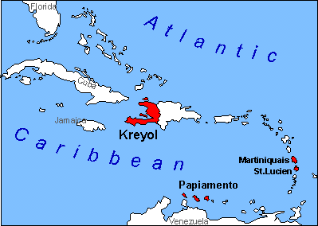
(지금도 크레올 언어가 쓰이는 저 빨간 곳들은 예전에 프랑스 애들이 나쁜 일을 아주 많이 저질렀던 곳들입니다.)
이런 생태계가 100년 정도 유지된 결과는 아주 가관이었습니다. 1788년에 행해진 생 도밍그의 인구 조사 결과를 보면 (당시 인구 조사가 얼마나 정확했겠습니까마는) 백인은 27,717명으로 5.5%, 자유민으로 풀려난 흑인 및 뮬래토 (mulatto, 혼혈) 등 자유 유색인들(gens de couleur)이 21,808명으로 4.3%, 그리고 455,089명의 흑인 노예가 전체 인구의 90.2%를 차지하고 있었습니다. 글쎄요, 러시아의 농노들과 러시아 귀족층 간의 인구 비율이 이 정도일지는 모르겠으나, 러시아의 농노들과 러시아 귀족층 간의 관계가 생 도밍그의 농장주 및 흑인 노예들 사이만큼 험악했을 것 같지는 않았습니다. 아직 자동화기나 기갑 장비, 항공기 등도 없던 시절에 기껏해야 플린트락(flintlock) 머스켓으로 무장을 한 1명의 주인이 90명의 노예들을 마구 학대하면서도 그 질서가 유지되리라고 기대할 수는 없겠지요.
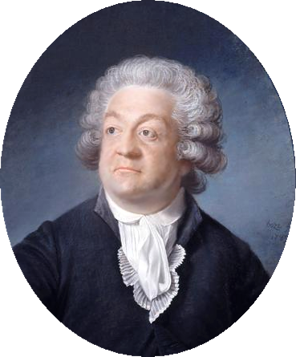
(정치가로서보다는 문필가로서 이름이 높았던 미라보 백작이십니다.)
18세기 말의 프랑스의 유명 정치가이자 문필가인 미라보 백작 (Honoré Gabriel Riqueti, comte de Mirabeau)이 생 도밍그의 프랑스인들은 "(폼페이 멸망의 원인이었던) 베수비오 (Vesuvius) 화산 기슭에서 잠을 자고 있다"라고 표현한 것은 이 상황을 두고 말한 것이었습니다. 프랑스 농장주들도 이런 사실을 당연히 잘 알고 있었습니다. 이들이 이런 수적 열세를 극복하기 위해 사용한 것은 더욱 무자비한 폭력에 의한 공포였지요. 반항하는 노예들에게는 사형 정도의 간단한 (?) 처벌이 아니라 거세, 화형 등의 끔찍한 고문이나 처형이 가해졌습니다. 이런 폭력의 난무가 과연 노예들을 고분고분 길들이는데 효과가 있었는지는 1791년 마침내 드러나게 됩니다.
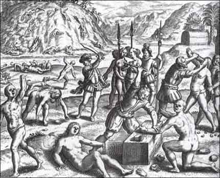
(지옥을 그린 그림이냐고요 ? 아닙니다. 정열과 낭만이 살아 숨쉬는 카리브 해의 어느 흔한 하루의 모습입니다. 사실 이건 스페인사람들이 카리브해 정복 초기에 타이노족들에게 행했던 모습들입니다만...)
1789년 마침내 터진 프랑스 대혁명은 언듯 생각하면 노예들에게 자유에 대한 희망의 불씨를 던졌다고 상상이 됩니다. 그도 그럴 것이, 혁명과 함께 선포된 인권선언(Déclaration des droits de l'Homme et du Citoyen)에서, "모든 인간은 자유롭고 평등하다"라고 선언되었기 때문입니다. 그리고 엄연히 생 도밍그도 프랑스 땅이니, 그 효력이 발생한다고 생각할 수 있겠지요. 하지만 그 실제 영향은 매우 복잡 미묘했습니다.
일단 당시 유럽 국가들은 식민지에도 본국과 동일한 법과 혜택이 주어지는 것을 당연하다고 보지 않았습니다. 당시 영국이나 프랑스나 모두 노예제를 운영하고 있었는데, 이들 국가에서는 모두 '모든 노예는 본토에 발을 딛는 순간 자유'라는 법을 가지고 있었습니다. 즉, 본토가 아닌 식민지에 있는 노예들은 본토에서 인권선언을 하건 말건 그냥 그대로 노예라는 이야기로 해석될 수 있었습니다.
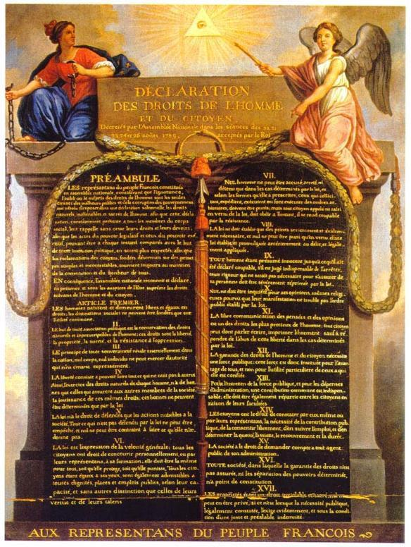
(윽 시발 - 제목과 포장은 요란하더니 결국 그냥 얼굴 하얀 애들끼리만 통하는 이야기였어 ?)
당시 생 도밍그에서 대규모 사탕수수 농장을 운영하던 백인 농장주들 (grands blancs)은 오히려 프랑스 대혁명을 반기는 분위기였습니다. 이들은 노예 해방 따위는 전혀 걱정하지 않았습니다. 오히려 기존 왕정이 노예들의 처우에 대해 이런저런 '실정에 어두운 탁상공론적인' 규정을 만들어 노예들의 기본권을 지켜주려 했던 것을 원망하고 있던 차였지요. 또 무엇보다 더 돈많은 고객인 영국과의 거래를 제한했던 프랑스 왕정이 무너진 것에 대해 쾌재를 부르고 있었습니다. 이들은 이번 기회에 아예 본국으로부터 독립하여 좀더 많은 자율권과 그에 따른 좀더 많은 이익을 얻어내고자 했습니다. 이와는 정반대로, 아프리카 흑인 노예들은 차라리 왕당파와 그를 지지해주는 영국의 세력에 막연히 뭔가를 기대하는 분위기였습니다. 이들과는 또 전혀 무관하게, 주로 뮬래토로 구성된 생 도밍그의 자유 유색인들(gens de couleur)은 이번 기회에 자신들에게도 백인들과 동일한 프랑스 시민권을 달라고 주장하는 등, 한마디로 자신들의 이익에 따라 생 도밍그는 완전 사분오열 되어 있었습니다. 하지만 그런 혼란 와중에서도 역시 힘을 발휘하는 것은 돈이라고, 1791년 5월, 프랑스 혁명 정부에서는 '일정 이상의 재산을 갖춘 부유한 유색인에게는 프랑스 시민권을 부여한다' 라는 결정을 내렸고, 백인 농장주들은 이를 거부하는 등 혼란만 가중되었습니다.
그러던 중 드디어 1791년 8월 21일 베수비오 화산이 폭발합니다. 즉 생 도밍그의 흑인 노예들이 일제히 반란을 일으켰던 것입니다. 이렇게 전체 섬이 일제히 반란에 돌입했던 것은 (사실 전체 섬이 일제히 반란에 돌입했던 것은 또 아닙니다만) 더티 부크만 (Dutty Boukman)이라는, 도망친 노예 (Maroon slave)이자 부두(Vodou)교 술사였던 남자의 카리스마가 큰 역할을 했다고 합니다. 사실 이 더티 부크만이라는 이름은 영어로 Dirty Bookman (지저분한 책쟁이)라는 것이 영어 발음 그대로 넘어온 것이었습니다. 이 양반은 원래 자메이카 태생의 영국 흑인 노예였는데 프랑스령인 생 도밍그로 팔려온 사람이었지요. 이 양반은 스스로 공부를 하여 bookman이라는 이름을 얻을 정도가 되었지요. 아무튼 이 양반은 1791년 8월 14일, 보아 카이만 (Bois Caïman)이라는 곳에서 부두교 의식을 치루면서 곧 있을 노예 대반란과 그 해방을 예언했다고 합니다. 불행히도 이 양반은 반란 시작 이후 3개월만인 11월에 프랑스인들에게 살해되어 그 목이 효시되는 수난을 당했습니다만, 이 양반이 뿌린 씨는 결국 세계 최초로 성공한 흑인 노예 반란 및 독립이라는 꽃을 피우게 됩니다. 다만 이 양반이 부두교 술사였다는 사실과 부두교 의식에서 아이티 독립이 최초로 시작되었다는 사실 때문에, 최근 아이티 대지진 이후, '아이티에 이렇게 재난이 끊이지 않는 이유는 이 섬나라는 시작부터가 악마와의 계약에 의한 것이었기 때문이다' 라고 주장하는 기독교 계통 언론인이 나오기도 했습니다. 제 생각에는 그런 생각을 하는 언론인/종교인이 있다는 사실 자체가 인류에게 있어 지진보다 더 큰 재난인 것 같습니다.
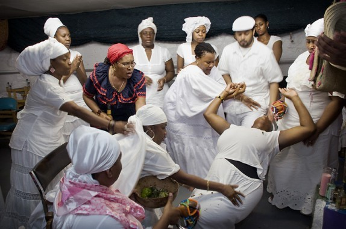
(부두교는 지금도 카리브해 지역에서 널리 믿어지는 종교 의식입니다. 좀비 흑마술 같은 건 안나온다는데요 ?)
아무튼 일단 대반란이 시작되자, 그 기세는 전체 인구의 5% 정도 밖에 안되는 백인들이 도저히 막을 수 없는 것이 되어버렸습니다. 백인들도 이런 대규모 반란을 항상 걱정하고 있었으므로 평소에도 거주지를 요새화하고 무기와 식량을 비축해두는 등 준비를 하고 있었습니다만, 이런 일부 요새화된 거점을 제외하고는 대부분의 지역이 곧 흑인들의 수중에 떨어졌습니다. 당연히 많은 백인들과 그 가족이 흑인 노예들 수중에 떨어졌고, 이들에게는 흑인들의 잔혹한 보복, 그러니까 약탈, 관광, 고문, 사지절단, 살해 등이 저질러졌습니다. 반란 시작 2개월만에 약 4천명의 백인들이 살해되고 약 180개에 달하는 농장들이 불에 타버렸다고 하니, 전체 백인 인구의 약 1/7이 한순간에 살해된 셈입니다. 많은 백인들은 아무 배편이나 구해지는 대로 행선지를 가리지 않고 올라타고는 생 도밍그를 떠났습니다. 이들은 대개 영국령인 자메이카나 스페인령인 쿠바, 또는 미국 동해안으로 향했습니다. 이들은 나중에 생 도밍그의 운명과 또 미국 남동부 지역의 크레올-프랑스 계통 문화에 지대한 영향을 끼치게 되지요. 하지만 여전히 많은 백인들이 생 도밍그에 남아있었습니다. 당시 생 도밍그에 있던 백인들이라고 다 돈이 많은 것도 아니어서, 당장 생 도밍그를 떠나면 삶의 터전이 전혀 없는 사람들도 꽤 있었고, 또 배편을 구하지 못해 발이 묶인 사람들도 꽤 있어서, 반란 초기의 광기에 어린 살육을 피한 백인들은 흑인 반란군들에게 일종의 인질이 되어 있었습니다. 그렇다고 전원 밧줄에 묶여 감방에 갇힌 것은 아니었고요... 뒤에 보시겠습니다만 상황이 매우 복잡했습니다.
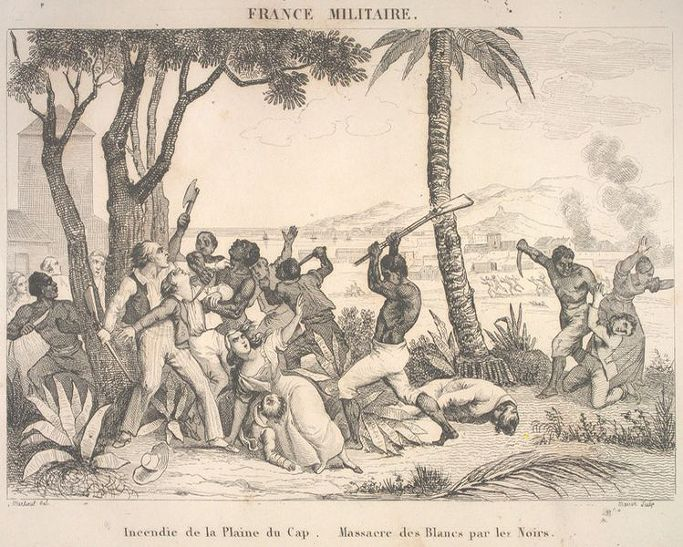
(1791년의 흑인 노예 반란입니다. 암튼 이럴 때는 누가 애초에 뭘 잘못했느니 따지지 말고, 일단 튀어야 합니다.)
사태가 이렇게되자, 비록 자신들도 혼란에 빠져있었으나 파리의 혁명 정부에서도 가만 있을 수는 없었습니다. 그들은 약 6천명의 병력을 파견하여 생 도밍그의 프랑스인들을 보호하려 했으나, 이 병력의 수와 질은 전면적인 노예 반란을 막기에는 택도 없는 수준이었습니다. 오히려 생 도밍그의 흑인 노예들을 위협했던 것은 프랑스 본국이 아니라 자메이카의 영국군이었습니다. 황금알을 낳는 거위였던 생 도밍그의 사탕수수 농장을 내버려둔 채 몸만 빠져 나와야 했던 프랑스 백인 농장주 입장에서는 무슨 수를 써서라도 자신의 재산을 되찾아야 했습니다. 이런 그들이 혼란에 빠진 본국 혁명 정부보다는 당장 근처에 있는 자메이카의 영국군이 더욱 의지할 만한 대상이었습니다. 왜 바로 옆, 그러니까 같은 히스파니올라 섬 동쪽에 있는 산토 도밍고의 스페인군에게는 의지하지 않았냐고요 ? 사실 스페인군은 이미 생 도밍그를 침공한 상태였습니다. 그런데 상황이 매우 복잡해서, 이들은 프랑스 백인 농장주 편이 아니라 흑인 노예 반란군과 협력 관계에 있었습니다. 뭐니뭐니해도, 스페인에게 생 도밍그는 프랑스 해적들로부터 시작된 프랑스 세력의 침공 결과로 태어난 원수의 땅이었거든요. 무법 상태였던 생 도밍그에서 프랑스 세력을 축출하여 스페인의 세력을 넓히려면 일단 프랑스로부터 반란을 일으킨 흑인 노예들을 지원해야 했던 것이 스페인의 입장이었던 것이지요.
상황이 이랬던지라, 도망친 프랑스 백인 농장주들(grands blancs)은 생 도밍그의 번영에 군침을 삼키고 있던 자메이카의 영국군을 꼬드겼습니다. 그러다 1793년, 프랑스 혁명 정부가 영국 및 기타 유럽 국가들에게 선전포고를 하자, 아예 잘 되었다고 판단한 프랑스 백인 농장주들은 자기들끼리 멋대로 자메이카의 영국군과 협약을 맺고 '이제부터 생 도밍그는 프랑스 땅이 아니라 영국 왕의 영토이다' 라고 선언을 했고, 그에 따라 자메이카 주둔 영국군이 생 도밍그에 상륙했습니다. 영국군은 생 도밍그의 북쪽 해안에 있는 프랑스 곶 (Cap Francaise)에 순조롭게 상륙했습니다. 이들은 당연히 스페인군과도 협조했습니다. 그런데 상황이 정말로 복잡했습니다. 영국군이 상륙하면서 싸워야 했던 적은 파리 혁명 정부에서 파견한 프랑스군이기도 했지만, 정작 그 프랑스군과 교전하던 흑인 노예 부대들도 영국군의 적이기도 했습니다. 이때 즈음해서는 전체 섬에 불과 3500명 정도 밖에 남지 않았던 프랑스군으로서는 정말 미치고 환장할 노릇이었지요. 흑인 반란군들과 싸우기도 어려운데 이젠 영국군이나 스페인군과도 싸워야 했으니까요. 아무튼 해군의 지원을 받는 영국군은 순조롭게 해안 도시들을 접수했고 흑인 반란군들은 산지와 정글로 밀려나고 있었습니다. 무장도 변변치 못한 흑인 반란군이 무적의 레드코트들 앞에서 승산이 있을리 만무했지요.
(우린 19세기초의 미군이다 ! 다 덤벼 !)
그런데 뜻밖에도 승산이 있었습니다. 기세등등하게 생 도밍그를 침공했던 레드코트들은 처음에는 기세가 등등했으나, 왠일이지 제풀에 지쳐 시름시름 앓다가 죽어버리는 것이었습니다. 바로 황열병의 습격을 받은 것이었지요. 실제로 영국군은 1793년에서 1798년까지 5년 동안 생 도밍그의 주요 도시들을 장악하고 행정부까지 운영하는 등, 사실상 생 도밍그를 지배했으나, 결국 흑인 반란군의 게릴라식 공격과, 무엇보다도 황열병의 맹위를 견디지 못하고 결국 1798년 다시 꼬리를 말아쥐고 자메이카로 도주해버립니다.
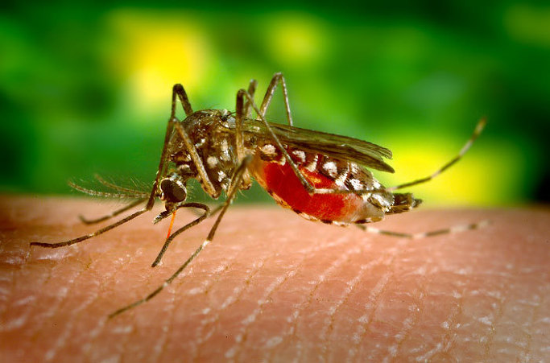
(이 작은 모기가 지구상에서 인간에게 가장 치명적인 동물로 선정된 바 있다는 거 다들 아시지요 ?)
여기서 잠깐, 자메이카에는 황열병이 없었나요 ? 물론 있었습니다. 전에 설탕과 카리브해 편에서도 인용했듯이, 영국군에서 이 자메이카 주둔군으로 발령을 내는 것은 곧 사형 선고나 다름없다고 할 정도였습니다. 그런데 자메이카에서도 견디던 영국군이 왜 바다 건너 생 도밍그에 왔다고 맥을 못 추었을까요 ? 이는 황열병이 모기에 의해 전염되는 병이라는 사실과 관계가 있습니다. 실은 자메이카 내부에서도, 영국군이 계속 산이며 정글을 헤집고 다니는 야전 생활을 했다면 황열병 환자들이 크게 늘었을 것입니다. 황열병을 옮기는 매체인 황열병 모기 (Aedes aegypti, 학명에 이집트가 들어가기는 하지만 정작 이집트에는 이 모기가 없습니다)가 주로 정글이나 습지에 많았기 때문입니다. 우리나라에서도 도시 내의 모기보다는 산모기 바다모기들이 더 악랄하다고 하지요. 이렇게 흑인 반란군을 쫓아 정글 지대를 헤매야 했던 영국군은 황열병의 공격에 큰 병력 손실을 보아야 했습니다. 흑인들은 황열병에 내성이라도 있나요 ? 그건 물론 아닙니다. 다만 황열병은 한번 앓고 나면 정말 평생 면역력이 생겼으므로, 어려서부터 황열병에 노출되며 살았던 토착민들 (황열병은 원래 아프리카에서 노예들을 따라 건너온 병이었습니다) 은 좀더 면역력이 강했을 것입니다.
영국군의 침공은 시작만 요란했을 뿐 결국 별 소득 없이 끝났는데, 이 영국군의 침공이 생 도밍그의 역사에 중대한 전환점을 하나 만듭니다. 바로 투쌩 루베르튀르(Toussaint Louverture)의 등장이지요.
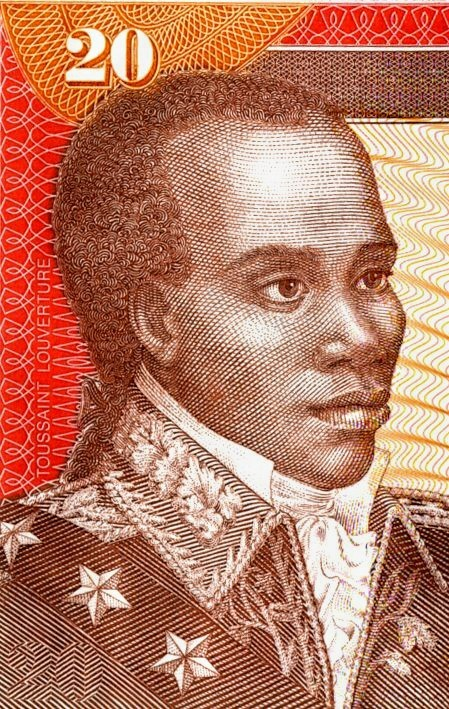
(지금의 아이티 공화국 지폐에 나오는 투쌩의 모습입니다. 사실 보면 그림마다 얼굴이 천양지차로 다 달라요.)
이 투쌩 루베르튀르라는 양반은 당연히 흑인 노예 출신이었습니다. 1743년 정도에 태어난 것으로 추정되는데, 루베르튀르라는 성은 사실 나중에 붙여진 것이고, 처음 이름은 그냥 투쌩이었습니다. 그 이름 Toussaint은 영어로 all saints, 즉 '모든 성인'을 뜻하는 것인데, 뭔가 대단한 의미를 가지고 붙인 것은 아니고 그냥 11월 1일, 즉 만성절 (All Saints Day)에 태어났기 때문에 이런 이름을 붙였다고 합니다. 뒤에 생겨난 성인 루베르튀르(Louverture)는 영어로 the overture, the opening에 해당하는 것인데, 이에 대해서는 두가지 설이 있습니다. 하나는 훗날 그가 반란 전쟁을 지휘할 때 그가 전투를 이끄는 모습을 본 프랑스 관리가 '저 자가 향하는 적진에는 항상 구멍이 생기는군 !' 하고 감탄한 것에서 비롯되었다는 것이고, 다른 하나는 아주 간단히, 그냥 그의 앞니 사이가 많이 벌어져 있어서 그런 이름이 생겼다고도 합니다.
투쌩은 생 도밍그에서 노예로 태어난, 즉 2세대 노예에 속하는 사람이었습니다. 그의 아버지는 서부 아프리카 베넹의 왕자였는데 그만 노예 상인들에게 납치되어 생 도밍그로 끌려온 사람이라고 전해집니다만, 그 말에는 사실 아무 증거가 없습니다. 고려 태조 왕건이 당나라 황제와 용녀의 자손이라는 설과 비슷한 것 같아요. 투쌩은 2세대 노예답게, 자신이 속한 브레다 (Breda)라는 지역의 농장에서 중간 보스 역할을 하는 착실한 노예였다고 합니다. 그러다가 결국 자유까지 허락받았고, 월급을 받는 농장 감독으로 계속 일을 했습니다. 심지어는 돈을 모아 작은 커피 농장을 임차하여 커피 농사도 지었다고 하네요. 그 커피 농장에서도 노예를 썼냐고요 ? 예 당연하지요. 노예가 약 12명 정도 딸린 작은 농장이었다고 합니다.
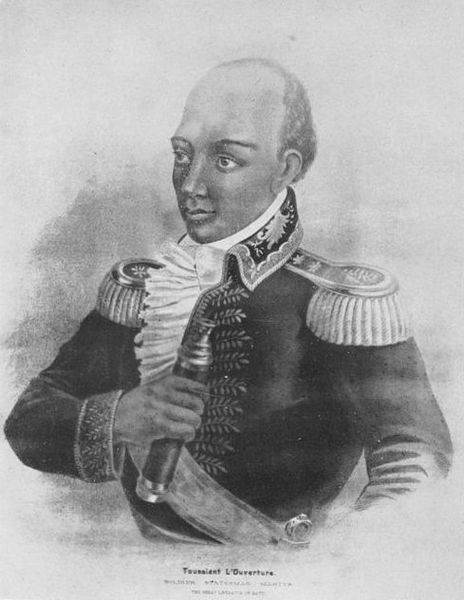
(투쌩의 또다른 그림입니다.)
이 배경만 보면 투쌩은 흑인 노예 반란을 지휘할 만한 인물로는 보이지 않습니다. 실제로도 투쌩은 초기 반란에는 전혀 참여하지 않았습니다. 오히려 자신의 가족과 함께, 브레다 농장의 백인 주인 가족을 서둘러 배에 태워 스페인령인 산토 도밍고로 피신 보내줄 정도였지요. 하지만 그는 노예 출신치고는 꽤 배운 사람이었습니다. 그는 어려서 예수회 선교사들에게 약간의 교육을 받았기 때문에 크레올 어 외에도 프랑스어를 할 줄 알았고, 그리스 철학자 이야기나 마키아벨리 이야기도 알고 있었다고 합니다. 놀랍게도 글을 쓸 줄도 알았는데, 불행히도 맞춤법은 철저히 엉터리였다고 하네요. 하지만 그의 얇팍한 지식만으로도 그는 흑인 노예들 사이에서는 지식인으로 통할 수 있었고, 특히 어려서부터 배운 아프리카 민간 요법과 예수회 선교사들에게서 배운 의학 지식으로 인해, 그는 의사로서 흑인 반란에 참여하게 됩니다. 그는 주로 프랑스 관리들과 흑인 반란군 사이의 협상 등에서 활약했는데, 주로 온건파 역할을 많이 했습니다. 당시 프랑스 관리들과 흑인 반란군은 전쟁 상태였으므로, 흑인 반란군은 프랑스와 대립하는 스페인군과 손을 잡은 상태였는데, 투쌩도 역시 스페인군과 협력하여 프랑스 관리들을 공격하는 활동을 했습니다. 이때 그의 지휘나 부대 운용이 차츰 두각을 드러내면서 그의 휘하에 흑인 병사들이 많이 몰려오게 되었습니다.
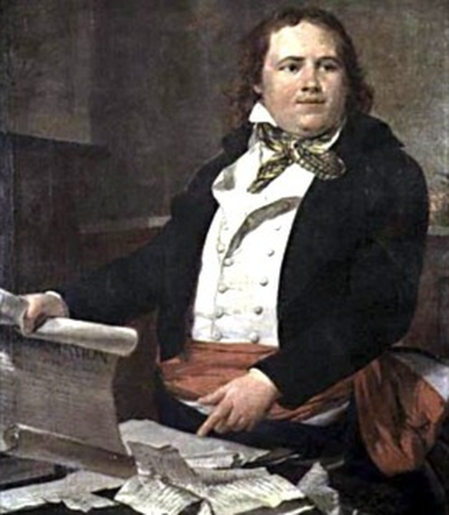
(현대의 아이티에서도 여러가지 평가를 받고 있는 손쏘낙스입니다. 투쌩에 의해 자의반 타의반으로 프랑스에 보내진 뒤, 그냥 잊혀진 인물이 되어버립니다.)
1791년 시작된 흑인 노예 반란은 2년이 흐르도록 수습되지 못하고 있었고, 특히 위에서 언급한 영국군의 침공으로 인해 더더욱 혼란스러운 상황에 빠지게 되었습니다. 그런데 이렇게 사면초가의 위기에 놓인 프랑스 관리 손쏘낙스(Léger-Félicité Sonthonax)는, 이 꽉 막힌 상황에 돌파구를 만들고자 1793년 8월 과감한 조치를 하나 취합니다. 즉, 손쏘낙스는 일개 지방 관리임에 불구했으므로 이런 일을 할 권리가 전혀 없었음에도 불구하고, 자신의 책임하에 생 도밍그의 모든 노예들을 자유인으로 풀어준다는 노예 해방 선언을 해버린 것입니다. 마치 남북 전쟁 때의 링컨 대통령처럼 말이지요. 그 결과도 비슷했습니다. 처음에는 투쌩을 비롯한 흑인들은 이 조치에 별로 감동하지 않았습니다. 궁지에 몰리니까 내놓은 궁여지책이라는 생각도 들었고, 또 실제로 그럴 권리와 힘도 없는 하급 관리 주제에 립 서비스에 불과하다는 평판이었지요. 그러나 몇개월 뒤, 파리 혁명 정부에서도 '모든 프랑스 식민지의 노예들은 이제부터 자유인'이라는 노예 해방 선언이 선포되자, 분위기가 반전됩니다. 특히 스페인군도 점점 세력이 커지는 투쌩의 부대에 대해 견제를 해오던 터라, 투쌩은 노예 해방을 선언한 쪽을 위해 싸우겠다며 스페인군 쪽에서 프랑스군 쪽으로 전향을 선언해버린 것입니다.
되돌아보면 백인 농장주들이 조국이고 이념이고 내 돈을 되찾아야겠다며 영국군을 끌어들인 것이 결국 프랑스의 노예 해방 선언을 이끌어냈고, 그로 인해 투쌩이 자유 프랑스 편으로 돌아서게 된 것입니다. 그리고 이 사건이 결국 생 도밍그, 즉 훗날의 아이티 공화국으로 하여금 세계 최초로 백인 국가의 압제에서 벗어난 흑인 노예들의 성공적인 독립국가 창설로 이어지는 결과를 낳습니다.
하지만 그건 상당히 먼 훗날의 이야기이고, 당장 투쌩은 삽시간에 유리한 입장에서 사면초가의 프랑스 정부군 입장으로 바뀌면서 큰 고생을 하게 됩니다. 일단 스페인군의 공격은 물론이고, 여태까지 같이 스페인 측에서 싸워온 동료 흑인 부대들의 공격도 받게 되었으며, 무엇보다도 프랑스 정부군을 공격하는 영국군의 공격까지 받게 된 것입니다.
하지만 고진감래라고, 좀 버티다보니 사태가 조금씩 호전되었습니다. 일단 1795년 바젤 (Basel) 조약에서, 스페인 본국 정부는 파리 혁명 정부에게 생 도밍그는 물론이고 히스파니올라 섬 동부 지역인 산토 도밍고까지 다 넘겨주기로 협약을 맺습니다. 식민지 현지 상태와는 무관하게, 스페인 본국 정부의 사정이 궁했거든요. 또 투쌩의 이상과 리더쉽에 끌린 흑인 반란군 병사들이 그의 휘하에 모여들면서, 경쟁 관계에 있던 다른 흑인 군벌들과의 싸움에서도 승기를 잡아갈 수 있었습니다. 제멋대로 노예 해방을 선언한 프랑스 관리 손쏘낙스와의 관계도 좋아서, 손쏘낙스는 투쌩의 두 아들이 프랑스 본국에서 공부할 수 있도록 유학까지 보내줍니다.
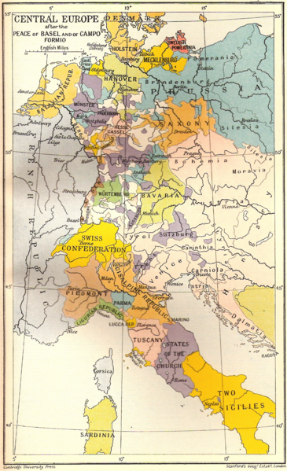
(1795년 바젤 조약의 핵심은 파리 국민공회가 스페인 및 프로이센과 평화 협정을 맺었다는 것이지요.)
문제는 만만치 않은 상대였던 영국군이었습니다. 그는 영국군을 생 도밍그에서 정면 승부로 몰아내려고 애를 썼으나 결국 실패했고, 방법을 바꾸어 게릴라 전술로 영국군을 괴롭혔습니다. 이것이 주효했습니다. 영국군도 정글에서 치고 빠지는 투쌩의 부대를 어찌하지 못하고 황열병에 픽픽 자꾸 쓰러지기만 했습니다. 이러는 사이 투쌩은 본국 프랑스와의 관계에 있어서나 동료 흑인 지휘관들과의 관계에 있어서나 많은 굴곡을 겪습니다만, 결국 그와는 상관없이 영국군으로 하여금 '생 도밍그는 지옥'이라는 생각을 하게 할 정도로 영국군을 몰아 붙이는데 성공합니다. 물론 황열병의 공로가 컸지요. 결국 1798년 4월 30일, 투쌩은 영국군 메이틀랜드 (Thomas Maitland) 장군과 종전 협정을 맺습니다.
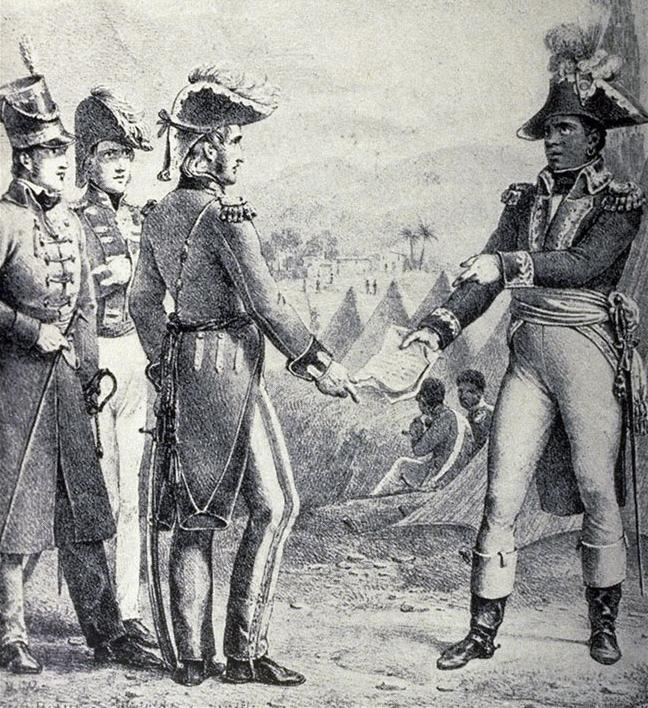
(메이틀랜드와 협약을 맺는 투쌩. 투쌩이 젊어서 사탕수수밭에서 일할 때, 어디 감히 영국 귀족과 눈을 맞출 생각이라도 했었겠습니까 ?)
조건은 영국군이 철수하는 대신, 그동안 프랑스 혁명에 반대 활동을 해왔던 프랑스인들을 사면해준다는 것으로서, 사실상 투쌩의 완승이었습니다. 콧대 높은 영국 귀족 출신 장군이었던 메이틀랜드는 한낱 아프리카 흑인 노예 출신과 이런 굴욕적인 협약을 맺으려니 아마 죽을 맛이었을 겁니다. 나중에 메이틀랜드는 자메이카로 흑인 노예 반란을 전파하지 않겠다는 약속 하에, 생 도밍그에 대한 해상 봉쇄까지 다 풀어줍니다. 메이틀랜드가 프랑스에서 파견된 백인 관리인 에두빌(Gabriel Hédouville)을 배제하고 투쌩과 직접 대화한 것도 사실은 투쌩과 프랑스 본국 정부와의 사이를 틀어놓으려는 계책의 일환이었습니다. 못 먹는 감 찔러나 본다는 속셈이었지요.
그런데 그게 잘 먹혔습니다. 원래 프랑스 본국에서도 (비록 노예 해방이네 뭐네 떠들었지만) 한낱 노예 출신 검둥이가 생 도밍그같은 부유한 식민지의 정권을 한 손에 쥐고 흔들고 있다는 사실이 무척 마음에 안 들었거든요. 1798년 3월 본국에서 파견나온 에두빌은 이미 올 때부터 투쌩의 영향력을 약화시키라는 임무를 띠고 온 것이었습니다. 에두빌은 뮬라토 장군이자 투쌩의 라이벌이었던 리고 (André Rigaud)를 부추김으로써 이이제이의 전략을 펼치려 하였으나, 결국 투쌩은 이 정치 및 군사 분쟁에서 승리하여 에두빌과 리고 모두를 프랑스로 축출해버리고 명실상부한 섬의 1인자가 됩니다.
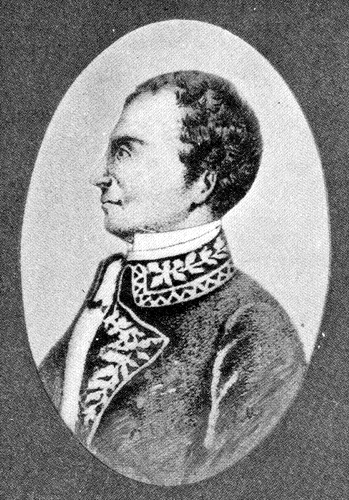
(리고는 어려서부터 부유한 농장주였던 백인 아버지의 인정을 받아 교육도 잘 받았습니다. 그는 두발은 흑인처럼 검고 곱슬곱슬했으나, 피부색은 거의 백인처럼 밝은 편이었다고 하며, 좀더 백인처럼 보이고자 부드러운 머리털로 된 가발을 쓰고 다녔다고 합니다. 그는 뮬래토가 흑인보다는 우수한 사회적 지위에 있다고 주장했으므로, 투쌩과는 충돌할 수 밖에 없었습니다.)
투쌩의 정치는 한마디로 중도 보수파 정도라고 할 수 있었습니다. 그는 프랑스에서 노예제 폐지가 유지되는 한, 독립 공화국을 세우겠다는 야심이 전혀 없었고, 그가 만든 생 도밍그 자체 헌법에도 생 도밍그는 프랑스의 영토이며 생 도밍그의 모든 사람들은 프랑스 국민이라고 명기하고 있었습니다. 종교적인 면에서도, 생 도밍그 혁명 자체가 부두교 의식에서 시작된 것임에도 불구하고, 정통 카톨릭을 생 도밍그의 국교로 내세웠습니다. 또한 그는 경제 부흥에 중점을 두었습니다. 당연히 노예 노동은 금지했으나, 그는 전직 노예였던 흑인들에게 다시 사탕수수 농장으로 돌아가 예전처럼 농사를 지으라고 강요했습니다. 여기서 과거 고된 노동의 악몽을 떠올린 많은 흑인들이 반발했습니다만, 그의 입장은 단호했습니다. 경제가 제대로 서지 않으면 그의 군대는 무너질 것이고, 그럴 경우 다시 노예제를 확립하러 영국이든 프랑스든 스페인이든 백인 세력이 다시 쳐들어올 것이라고 판단했던 것이지요. 그리고 그 판단이 옳았습니다.
바로 1799년, 나폴레옹이 브뤼메르 쿠데타로 정권을 잡고 새 헌법을 발표하면서 문제가 터져 나왔습니다. 나폴레옹이 발표한 이 헌법에서, '식민지는 별도의 법에 의한 통제를 받는다'라는 구절을 넣었던 것입니다. 이는 누구에게나 '노예제를 부활하겠다'라는 선포로 받아들여졌습니다. 이때문에 나폴레옹과 투쌩의 관계는 처음부터 그다지 좋지는 못했습니다. 나폴레옹은 전에 투쌩에게 내려졌던 프랑스 군대의 장군직을 그대로 인정해주었으나, 당시 투쌩이 계획 중이던 산토 도밍고로의 원정을 금지시켰습니다. 당시 산토 도밍고는 명목상으로는 1795년 바젤 조약에 따라 프랑스 땅이 되었으나, 여전히 스페인 총독이 노예제를 유지하며 지배하고 있었는데, 나폴레옹은 스페인과의 관계 때문에라도 이 원정을 막으려 했던 것입니다. 하지만 투쌩은 나폴레옹의 명을 어기고 그대로 침공을 감행, 마침내 전체 히스파니올라 섬을 완전히 정복해버립니다. 투쌩은 명실상부 검은 나폴레옹이라고 불릴만 했습니다.
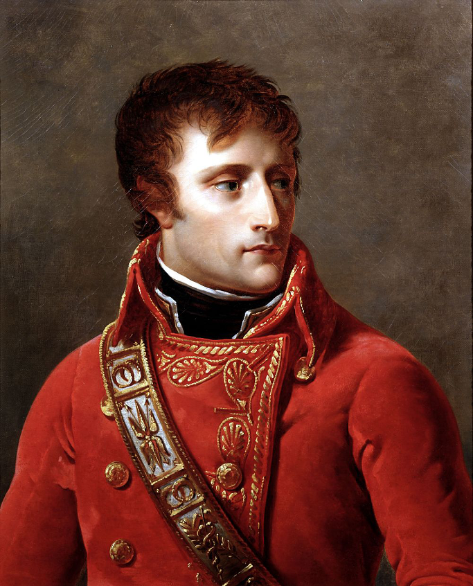
(뭐 ? 검은 나폴레옹 ? 새로 나온 짝퉁인가 ? 말만 들어도 불쾌하군.)
이렇게 검은 나폴레옹과 하얀 나폴레옹의 관계는 시작부터가 삐그덕이었습니다. 특히 투쌩이 1801년, 위에서 이미 언급한 생 도밍그의 자체 헌법을 제정하여 나폴레옹에게 전달하자, 나폴레옹은 그 사절로 온 뱅상(Vincent) 대령을 그대로 엘바섬에 유배시키는 것으로 불쾌감을 명백하게 표시했습니다. 나폴레옹이 불쾌하게 여길 만도 했던 것이, 투쌩의 서신이 이렇게 시작되었기 때문이었습니다.
"흑인들의 1인자가 백인들의 1인자에게" (공손하게 1.5인자라고 표현해야 했었을까요 ?)
물론 투쌩은 그 편지에 대한 답장은 받지 못했지요. 아, 답장이 오기는 왔는데, 편지로 온 것은 아니었습니다. 1802년, 나폴레옹의 매제 르클레르 (Charles Emmanuel Leclerc) 장군이 약 2만명의 병력을 끌고 카리브 해에 나타난 것이었습니다.